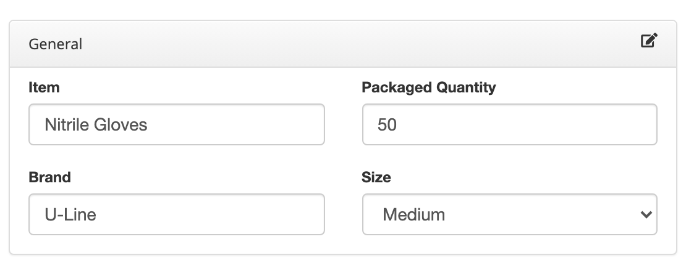
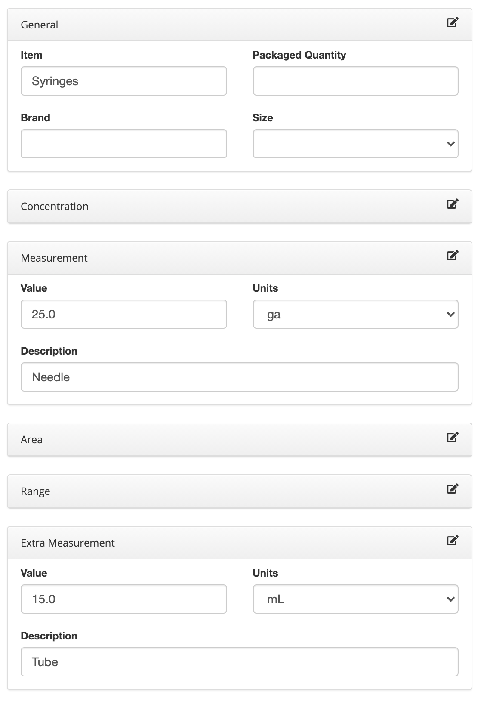
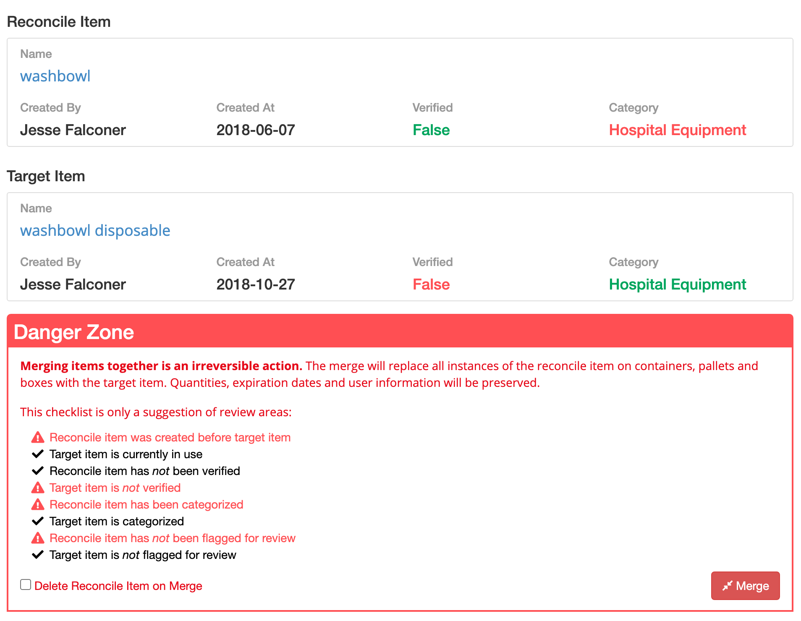
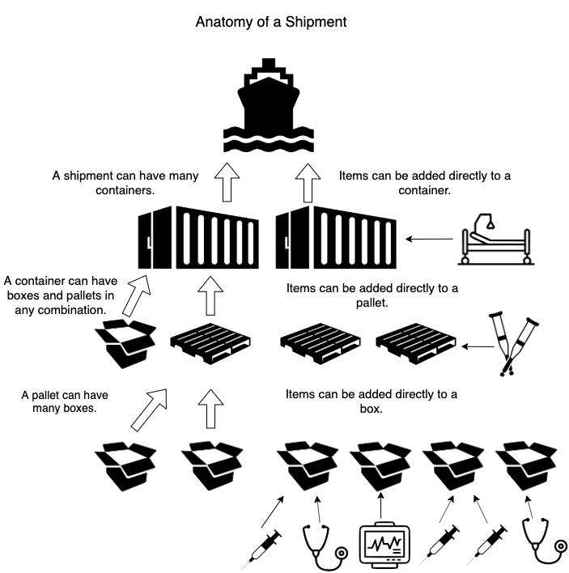
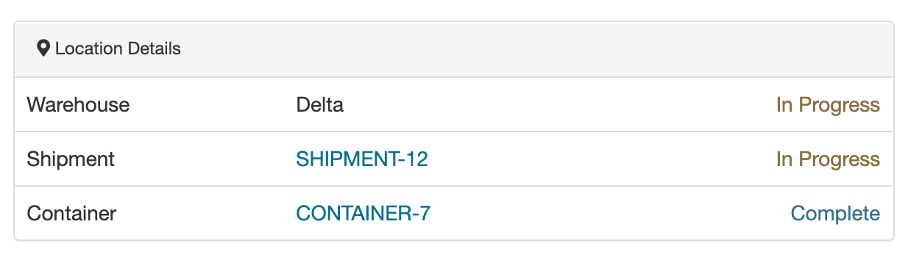

About This Document
This document should provide a brief understanding of the new features of the inventory application. You're encouraged to ask for clarification or changes to this document and the app. The app is referred to as KBNF herein.
Users
Roles
A user can have one of four roles: Admin, Volunteer, Shipping Manager and Receiving Manager.
Admin: can create, update, delete and view any resource within KBNF.Volunteer: can only create, update, delete and view Boxes, Pallets and Containers that do not have the statusReceived. They may assign items to these resources, and may change how they are nested, as in: which Box is assigned to which Pallet. This type of user is typically located in our Canadian warehouses.Shipping Manager: is a more advanced type ofVolunteer. They may also manage new Items through Reconciliation, view Shipments and Warehouses.Receiving Manager: is the inverse of theShipping Manager. They cannot create, update or delete new resources, but can view them. Additionally, they may only view inventory that has statusReceivedand is located in a Warehouse that they are assigned to. From there, they have the ability to Unpack Items.
New Users and Statuses, Warehouses
When a new user signs up, their status is defaulted to Deactivated and they may not access the app. An Admin must manually switch their status to Activated and assign them a Role and a Warehouse.
Warehouses
Warehouses determine where inventory is currently located at, and who is working there. It is important to ensure users are assigned to a Warehouse through their user profile, and that Shipments have a Shipping Warehouse and a Receiving Warehouse.
Items
A fundamental change compared to the legacy app is that there is no Big Item class of Items. An Item is just an Item and can be attached directly to a Container, Pallet or Box. Three other notable fields:
Flag for Review: any user creating an Item can set this toTrueif they are unsure the Item is correctly categorized, named, etc. This item will now be listed inReconciliation. Defaults toFalse.Verified: new items default toFalseand will be listed inReconcilation. This can only be changed by anAdminorShipping Manager.Photo: a user can attach one photo to any item.
Item Naming & the New Standardization Process
A new Item naming process was devised in order to reduce duplicate items and create better data. This is achieved by fragmenting the Item form into smaller pieces and allowing the app to generate the name. Let's look at the General section of Item naming:

Previously a user had infinite ways of inputting this item. Nitrile Gloves M (50), Nitrile Gloves Medium 50 Pack, Nitrile Gloves 50 Medium, etc...
By breaking down the composition of a name into smaller components, this form above will always generate the following name: U-Line Nitrile Gloves Medium 50-Pack.
The Item's Item field (seen above) should be the most basic component of the item, without adjectives and excess noun-modifiers like sizes and capacities.
Let's look at a more complicated item name found in the legacy data: Syringes with 25 Gauge needles and 15mL tube. Also found in the data: S&N 25ga, 15mL. These are duplicate items. The Item form permits multiple measurements in order to capture and standardize the name. It would look like this:

The outputted name would be: Syringes 25ga Needle 15mL Tube.
Other components of measurements include Area (Cotton Bandages 5x10cm) and Range (IV Tubes Assorted 1-5mm).
Categories
Another fundamental change compared to the legacy app is that Categories are no longer immutable and can be managed themselves like an Item. For example, if you have 100 Items that belong to the Category "Medical Supplies" and you wish to change the name to "Medical Supplies - Pulmonary", those 100 items will automatically inherit that new category's name.
Reconciliation
Reconciliation is a section in KBNF where you manage Items. There are three classes of Items listed here:
Unverified: these are new Items created by a volunteer that should be reviewed for accuracy. When you choose an Item to inspect, it will automatically search the database for similar Items and make suggestions of possible duplicates. If a duplicate is found, you can merge these two Items together. Before merging, a warning message will appear with a list of areas to review:

Uncategorized: This list contains Items that do not have a category.Flagged: This list contains Items that were self-flagged when the user created them.
Resource Hierarchy

It is important that each Box, Pallet and Container is properly assigned to its parent before it is shipped. This ensures each resource is tied to a Shipment, which determines its location and whether items within can be unpacked. You can view the hierarchy of a resource's location in a dropdown panel next to its information. For example, a Box and its parent resources that are properly assigned will look something like this:

You can also view a list of Staged Boxes, Pallets and Containers from the menu.
Shipments
Shipments can have 3 statuses:
In Progress: The Shipment is being worked on. Containers, Pallets and Boxes within this Shipment may be eitherIn ProgressorCompletethemselves.Complete: The Shipment is finalized and ready to ship or is in transit. Changing a Shipment's status toCompletewill cause any Containers, Pallets and Boxes within it to automatically becomeCompleteas well.Received: The Shipment has been delivered. When changed to this status, the Shipment and all its items within can be accessed by theReceiving Managerand are elligible for unpacking. Similar toComplete, all Containers, Pallets and Boxes within are automatically changed to this status.
Shipments also belong to two Warehouses, one for Receiving and one for Shipping from. It is important to assign a Shipment to Warehouses as this determines where items are currently located, and who they can be accessed by.
When viewing a Shipment, you can use the Export tab to download a list of items within that Shipment, grouped by either Category or Item Name.
Containers
Like Shipments, Containers can have 3 statuses. Changing a Container to Complete or Received will cause all Pallets and Boxes within to automatically have that status as well.
Containers belong to a Shipment. It is important to ensure a Container is assigned to a Shipment before completing the Shipment.
Pallets
Like Shipments, Pallets can have 3 statuses. Changing a Pallet to Complete or Received will cause all Boxes within to automatically have that status as well.
Pallets belong to a Container. It is important to ensure a Pallet is assigned to a Container before completing the Shipment.
Boxes
Like Shipments, Boxes can have 3 statuses.
Boxes can belong to either a Pallet or Container. It is important to ensure a Box is assigned to one of these before completing the Shipment.